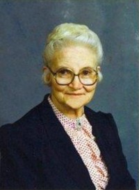

Mildrid Hildegunn Dahl
K, #88730, f. 13 mai 1954, d. 21 januar 2026
Familie: Jørgen Arnstein Grannes
| Sønn | Ronny Grannes+ |
| Sønn | Hans Jørgen Grannes+ |
Biografi
Mildrid Hildegunn Dahl ble født den 13 mai 1954. Hun giftet seg med Jørgen Arnstein Grannes. Hun døde den 21 januar 2026. Hun ble gravlagt den 5 februar 2026 på/i Høylandet kirke, Høylandet, Trøndelag.
Mildrid Hildegunn Dahl was also known as Grannes. Hun was also known as "Mitta." Hun ble konfirmert i 1969 på/i Høylandet kirke, Høylandet, Nord-Trøndelag.
| Sist redigert |
28 januar 2026 18:28:33 |
Joseph Sandnes
M, #88731, f. 7 februar 1886, d. 9 mars 1917
Foreldre
Biografi
Joseph Sandnes ble født den 7 februar 1886 Lyon County, Iowa, USA. Han giftet seg med
Betsy Skillingstad Frisvold den 14 oktober 1908 på/i Kadoka, Jackson, South Dakota, USA. Han døde den 9 mars 1917 på/i Minneapolis, Hennepin County, Minnesota, USA.
Joseph Sandnes was also known as Joseph Sannes.
| Sist redigert |
23 juni 2026 21:37:27 |
| Slektskap | 3-menning 2 ganger forskjøvet til Håkon Wahl |
Julie Josephine Sannnes
K, #88732, f. 28 juni 1888, d. 7 november 1976
Foreldre
Biografi
Julie Josephine Sannnes ble født den 28 juni 1888 Cambell, South Dakota, USA. Hun giftet seg med
Clyde Bert Loutzenhiser den 7 september 1909 på/i Spokane County, Washington, USA. Hun døde den 7 november 1976 på/i Coeur d'Alene, Kootenai County, Idaho, USA.
Julie Josephine Sannnes was also known as Julie Josephine Loutzenhiser. Hun was also known as Julia Sannnes.
| Sist redigert |
27 april 2026 08:37:19 |
| Slektskap | 3-menning 2 ganger forskjøvet til Håkon Wahl |
Alma Christine Sannnes
K, #88733, f. 1 desember 1890, d. 28 august 1891
Foreldre
Biografi
Alma Christine Sannnes ble født den 1 desember 1890 Cambell, South Dakota, USA. Hun døde den 28 august 1891 på/i Cambell, South Dakota, USA.
| Sist redigert |
9 september 2019 00:00:00 |
| Slektskap | 3-menning 2 ganger forskjøvet til Håkon Wahl |
Olof Christian Sannnes
M, #88734, f. 31 oktober 1892, d. 3 juni 1893
Foreldre
Biografi
Olof Christian Sannnes ble født den 31 oktober 1892 Cambell, South Dakota, USA. Han døde den 3 juni 1893 på/i Cambell, South Dakota, USA.
| Sist redigert |
9 september 2019 00:00:00 |
| Slektskap | 3-menning 2 ganger forskjøvet til Håkon Wahl |
Alvin Christian Sannnes
M, #88735, f. 1 mars 1897, d. 27 januar 1898
Foreldre
Biografi
Alvin Christian Sannnes ble født den 1 mars 1897 Cambell, South Dakota, USA. Han døde den 27 januar 1898 på/i Cambell, South Dakota, USA.
| Sist redigert |
9 september 2019 00:00:00 |
| Slektskap | 3-menning 2 ganger forskjøvet til Håkon Wahl |
Betsy Skillingstad Frisvold
K, #88736, f. 27 november 1885, d. 22 februar 1936
Biografi
Betsy Skillingstad Frisvold ble født den 27 november 1885 Windom, Cottonwood County, Minnesota, USA. Hun giftet seg med
Joseph Sandnes den 14 oktober 1908 på/i Kadoka, Jackson, South Dakota, USA. Hun døde den 22 februar 1936 på/i Windom, Cottonwood County, Minnesota, USA.
Betsy Skillingstad Frisvold was also known as Betsy Sandnes.
| Sist redigert |
21 juli 2025 00:40:16 |
Judith Eleanora Cecilia Sannnes
K, #88737, f. 15 august 1909, d. 11 august 1983
Foreldre
Biografi
Judith Eleanora Cecilia Sannnes ble født den 15 august 1909 Kadoka, Jackson, Washington, USA. Hun døde den 11 august 1983 på/i Walla Walla, Washington, USA.
| Sist redigert |
8 september 2019 00:00:00 |
| Slektskap | 4-menning 1 gang forskjøvet til Håkon Wahl |
George Marvin Sannnes
M, #88738, f. 13 september 1911, d. 6 mai 1988
Foreldre
Biografi
George Marvin Sannnes ble født den 13 september 1911 Kadoka, Jackson, South Dakota, USA. Han giftet seg med
Hazel Sarah Ernstine Girton. Han giftet seg med
Flora Lucille Dodson. Han døde den 6 mai 1988 på/i Seattle, King County, Washington, USA.
Asken ble spredd over Puget Sound.
| Sist redigert |
7 mars 2025 17:58:31 |
| Slektskap | 4-menning 1 gang forskjøvet til Håkon Wahl |
Pearl Betrice Sannes
K, #88739, f. 18 juni 1913, d. 1 november 2001
Foreldre

Pearl Beatrice Sannes
Biografi
Pearl Betrice Sannes ble født den 18 juni 1913 Kadoka, Jackson, South Dakota, USA. Hun giftet seg med
Noel Clifford Sallee den 3 november 1930 på/i Ryegate, Golden Valley, Montana, USA.
Noel Clifford Sallee og hun ble skilt. Hun giftet seg med
Charles Preston Richmond. Hun døde den 1 november 2001 på/i Spokane County, Washington, USA. Hun ble gravlagt på/i Prairie View Cemetery, Coeur d'Alene, Kootenai County, Idaho, USA.
Pearl Betrice Sannes was also known as Pearl Betrice Sallee. Hun was also known as Pearl Betrice Richmond.
| Sist redigert |
27 april 2026 08:37:19 |
| Slektskap | 4-menning 1 gang forskjøvet til Håkon Wahl |
Grace Alvira Sannnes
K, #88740, f. 6 juli 1915, d. 15 september 1982
Foreldre
Biografi
Grace Alvira Sannnes ble født den 6 juli 1915 Mound, South Dakota, USA. Hun giftet seg med
Nils Emanuel Nilson. Hun døde den 15 september 1982 på/i Great Falls, Cascada, Montana, USA.
Grace Alvira Sannnes was also known as Grace Alvira Nilson.
| Sist redigert |
9 september 2019 00:00:00 |
| Slektskap | 4-menning 1 gang forskjøvet til Håkon Wahl |
Clyde Bert Loutzenhiser
M, #88741, f. 15 mai 1885, d. 9 september 1956
Biografi
Clyde Bert Loutzenhiser ble født den 15 mai 1885 Alcester, Union, South Dakota, USA. Han giftet seg med
Julie Josephine Sannnes den 7 september 1909 på/i Spokane County, Washington, USA. Han døde den 9 september 1956 på/i Coeur d'Alene, Kootenai County, Idaho, USA.
| Sist redigert |
27 april 2026 08:37:19 |
Alma Violet Loutzenhiser
K, #88742, f. 8 april 1918, d. 20 januar 1963
Foreldre
Biografi
Alma Violet Loutzenhiser ble født den 8 april 1918 Cambell, South Dakota, USA. Hun giftet seg med
Theodore Valentine Kary. Hun døde den 20 januar 1963 på/i Spokane, South Dakota, USA. Hun ble gravlagt på/i Holy Cross Cemetery, Spokane, Spokane County, Washington, USA.
Alma Violet Loutzenhiser was also known as Alma Violet Kary.
| Sist redigert |
4 mars 2025 00:23:07 |
| Slektskap | 4-menning 1 gang forskjøvet til Håkon Wahl |
Augusta Meisner
K, #88743, f. 11 juni 1890, d. 10 november 1988
Biografi
Augusta Meisner ble født den 11 juni 1890 Cambell, South Dakota, USA. Hun giftet seg med
Johannes John Johannessen Sannnes den 15 juli 1909 på/i Shelby, Buffalo, South Dakota, USA. Hun døde den 10 november 1988 på/i Selby Good Samaritan Cente, Selby, Walworth, South Dakota, USA. Hun ble gravlagt på/i Kvarness Cemetery, Pollock, Cambell, South Dakota, USA.
Augusta Meisner was also known as Augusta Sannnes. Hun bodde på/i Mound City, Cambell, South Dakota, USA.
| Sist redigert |
8 september 2019 00:00:00 |
Alfred Sannnes
M, #88744, f. 8 juni 1920, d. 31 oktober 2000
Foreldre
Familie: Margaret Elmina Potter (f. 10 april 1925, d. 24 februar 2013)
| Sønn | Marvin Arne Sannnes |
| Datter | Vivian Sannnes |
| Datter | Margaret Sannnes |
| Sønn | Dennis Sannnes |
| Datter | Charlene Sannnes |
| Sønn | Alfred Fritz Sannnes |
| Sønn | Timothy John Sannnes |
Biografi
Alfred Sannnes ble født den 8 juni 1920. Han giftet seg med
Margaret Elmina Potter den 17 april 1943. Han døde den 31 oktober 2000 på/i Michigan, USA. Han ble gravlagt på/i Oak Grove Cemetery, Chelsea, Washtenaw, Michigan, USA.
Alfred Sannnes bodde på/i Saline, Washtenaw, Michigan, USA.
| Sist redigert |
8 september 2019 00:00:00 |
| Slektskap | 4-menning 1 gang forskjøvet til Håkon Wahl |
Louis Clarence Sannes
M, #88745, f. 9 august 1922, d. 16 mai 2018
Foreldre
Familie: Ina Mae Budweiser (f. 20 november 1920, d. 20 juli 1982)
| Sønn | Robert Sannes |
| Datter | Susan Sannes |
Biografi
Louis Clarence Sannes ble født den 9 august 1922 Herreid, Campbell County, South Dakota, USA. Han giftet seg med
Ina Mae Budweiser i 1942. Han giftet seg med
Esther Katherine Armbrust i 1983. Han døde den 16 mai 2018. Han ble gravlagt den 24 mai 2018 på/i Woodbine Cemetery, Puyallup, Pierce County, Washington, USA.
Louis Clarence Sannes bodde på/i Puyallup, Pierce County, Washington, USA.
| Sist redigert |
2 mars 2026 00:02:33 |
| Slektskap | 4-menning 1 gang forskjøvet til Håkon Wahl |
Harlan Ralph Sannnes
M, #88746, f. 1926
Foreldre
Biografi
Harlan Ralph Sannnes ble født i 1926 South Dakota, USA. Han giftet seg med Mattie Porter i 1948. Han giftet seg med Siller May Fletcher.
Harlan Ralph Sannnes was also known as Bud Sannnes. Han bodde på/i Petersburg, Monroe, Michigan, USA.
| Sist redigert |
9 september 2019 00:00:00 |
| Slektskap | 4-menning 1 gang forskjøvet til Håkon Wahl |
Ruth Elsie Sannnes
K, #88748, f. 7 august 1913, d. 10 juli 2014
Foreldre
Biografi
Ruth Elsie Sannnes ble født den 7 august 1913 Pollock, Cambell, South Dakota, USA. Hun giftet seg med
Ellis Tenney Dockham den 10 november 1937. Hun giftet seg med
Paul D. Hill. Hun døde den 10 juli 2014 på/i California, USA. Hun ble gravlagt på/i Belevue Memorial Park, Pollock, Cambell, California, USA.
Ruth Elsie Sannnes was also known as Ruth Elsie Dockham. Hun was also known as Ruth Elsie Hill. Hun bodde på/i Dockham, Ontario, California, USA.
| Sist redigert |
8 september 2019 00:00:00 |
| Slektskap | 4-menning 1 gang forskjøvet til Håkon Wahl |
Helen Josephine Sannnes
K, #88749, f. 21 desember 1915, d. 4 september 2007
Foreldre
Biografi
Helen Josephine Sannnes ble født den 21 desember 1915 Pollock, Cambell, South Dakota, USA. Hun giftet seg med
James M. Wolverton den 21 desember 1936. Hun døde den 4 september 2007 på/i Olympia, Thurston, Washington, USA. Hun ble gravlagt den 8 september 2007 på/i Burns Cemetary, Burns, Harney, Oregon, USA.
Helen Josephine Sannnes was also known as Helen Josephine Wolverton. Hun bodde på/i Burns, Harney, Oregon, USA.
| Sist redigert |
8 september 2019 00:00:00 |
| Slektskap | 4-menning 1 gang forskjøvet til Håkon Wahl |
Alma Clara Sannnes
K, #88750, f. 1924, d. 2010
Foreldre
Biografi
Alma Clara Sannnes ble født i 1924. Hun giftet seg med
Wallace G. Veal i 1945. Hun døde i 2010.
Alma Clara Sannnes was also known as Alma Clara Veal. Hun bodde på/i Dexter, Washtenaw, Michigan, USA.
| Sist redigert |
9 september 2019 00:00:00 |
| Slektskap | 4-menning 1 gang forskjøvet til Håkon Wahl |
{kind=link}